Roadmap#
This page is the guide for the 'Mobile Robot' node on the roadmap below.
This guide assumes you have completed the smabo-esp32 setup.
Overview#
This page explains how to implement the "Mobile Robot" feature.
Specifically, you will implement:
- Controller control of the mobile robot
- Image-processing based control of the mobile robot
Required Parts#
The parts required to implement this feature are listed below.
| Part | Product URL | Notes |
|---|---|---|
| ESP32-DevKitC | link | Compatible boards are fine too |
| Smartphone | - | - |
| Breadboard (SAD101) |
link | Common breadboards have 5 holes across; this one has 6. You need the 6-hole version — the ESP32 won't fit widthwise on a 5-hole board. |
| Jumper wires | link | - |
| Battery box (4× AA, with battery snap connector) | link | The snap-connector version is easier to work with — recommended. |
| Battery snap connector (for the battery box) | link | The version with connector pins is recommended — easier to plug into a breadboard and less likely to slip out. |
| Rechargeable AA batteries × 4 | link | - |
| Battery charger | link | - |
| Tires for the toy DC motor | link | Compatible tires are fine too. |
| TT motor | link | The version with connector pins is recommended — easier to plug into a breadboard and less likely to slip out. Many compatible motors exist, but if the dimensions differ significantly from a standard TT motor, it may not mount correctly — please check carefully. |
| Universal caster S | link | - |
| TB6612FNG dual motor driver | link | - |
| Mini breadboard | link | Get the version with an adhesive backing. |
3D Printing Parts#
Print the newly added parts on your 3D printer.
The software used to drive a 3D printer varies by model, so this section only covers the key points rather than exact settings.
Print the following parts in the orientation shown.
Printing notes
- Print protruding features sideways so they don't snap off at the base when attaching/detaching parts
- Always print with supports turned ON
- smabo-repos/smabo-hardware/stl/mobile_robot/dc_motor_caster.stl
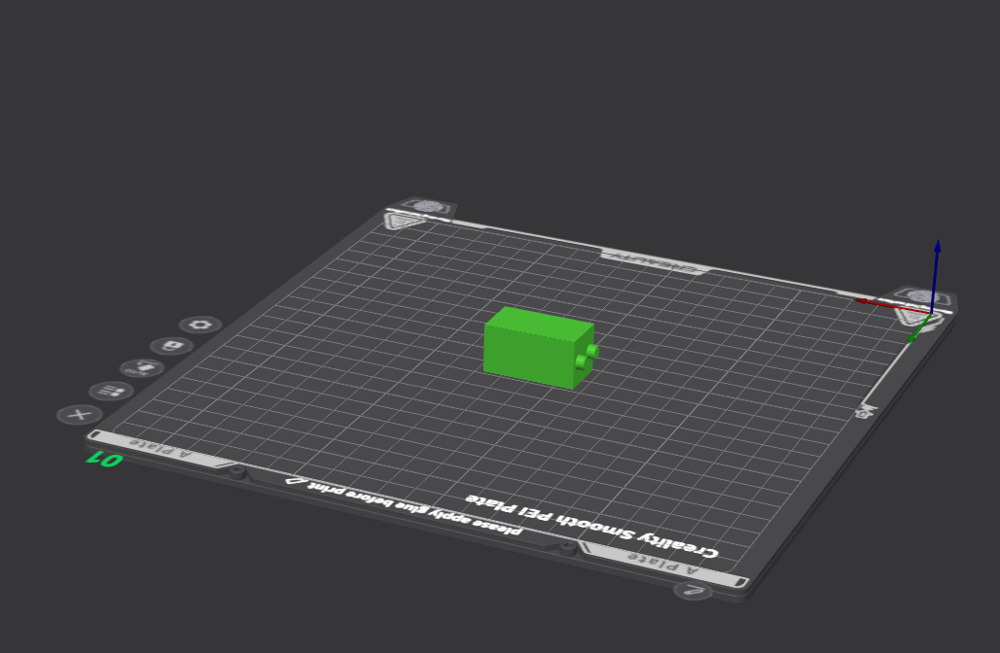
- smabo-repos/smabo-hardware/stl/mobile_robot/tt_motor/tt_motor_bottom.stl
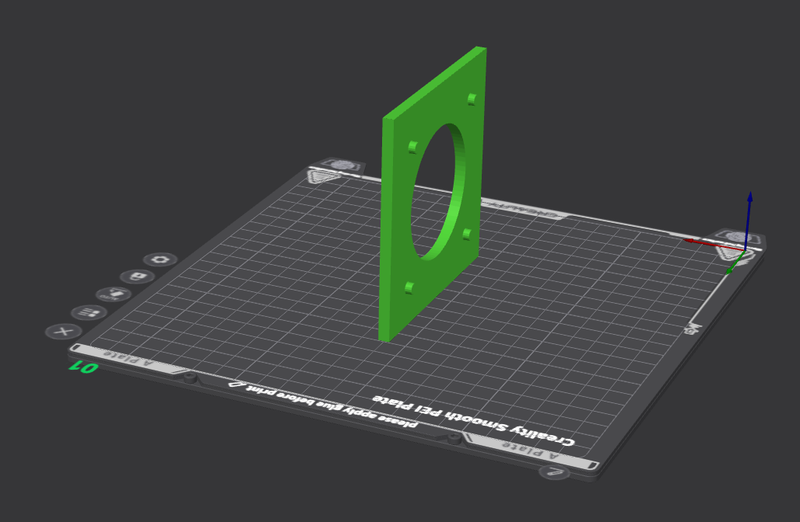
- smabo-repos/smabo-hardware/stl/mobile_robot/tt_motor/tt_motor_stopper1.stl × 2
- Print two — one for each motor (left/right).
- Print two — one for each motor (left/right).
- smabo-repos/smabo-hardware/stl/mobile_robot/tt_motor/tt_motor_stopper2.stl
- Print two — one for each motor (left/right).
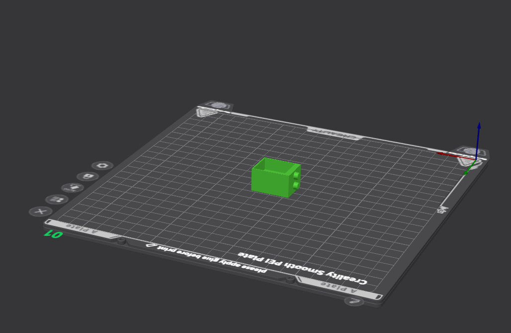
- Print two — one for each motor (left/right).
Assembly#
Assemble the required parts as shown in the video below.
※ The video also includes parts printed in earlier guides.
Assembly tips
The assembly video doesn't show how to attach the TT motors and the universal caster S, so the steps are described below.
First, attach the universal caster S to "dc_motor_caster.stl" as shown below.
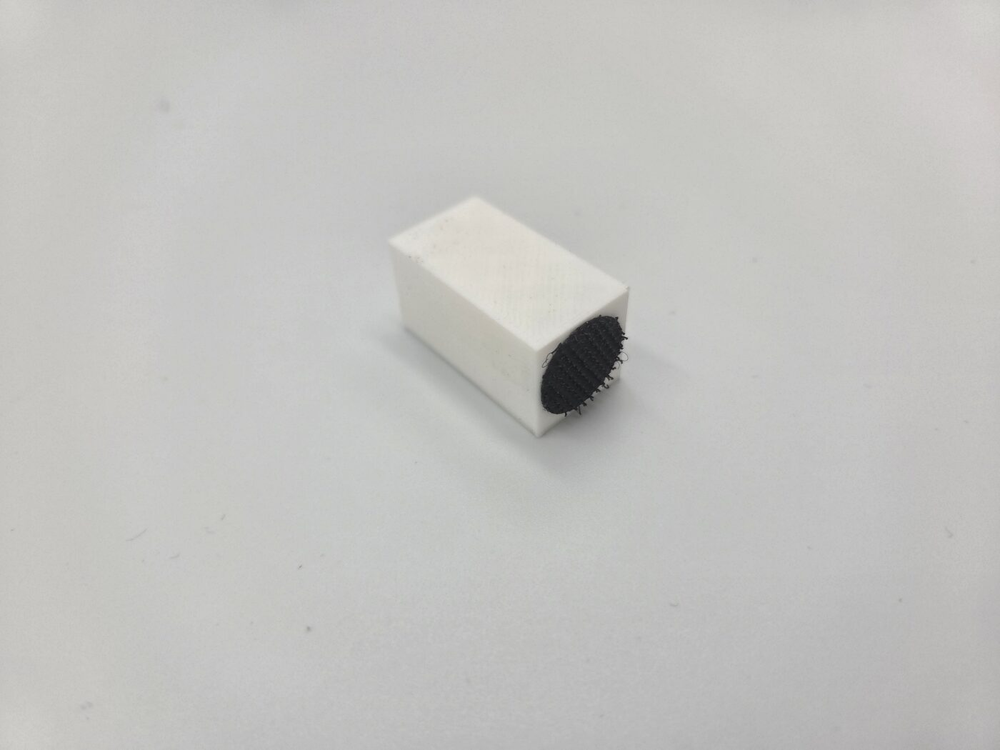
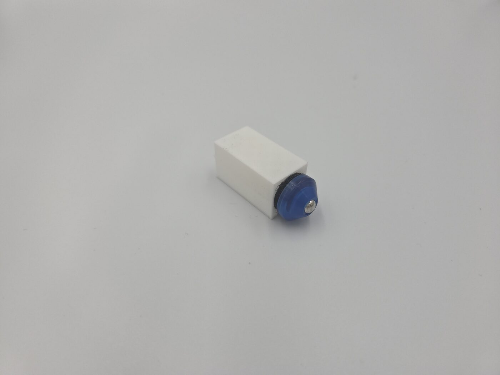
Next, secure the TT motors to "tt_motor_bottom.stl" using "tt_motor_stopper1.stl" and "tt_motor_stopper2.stl".
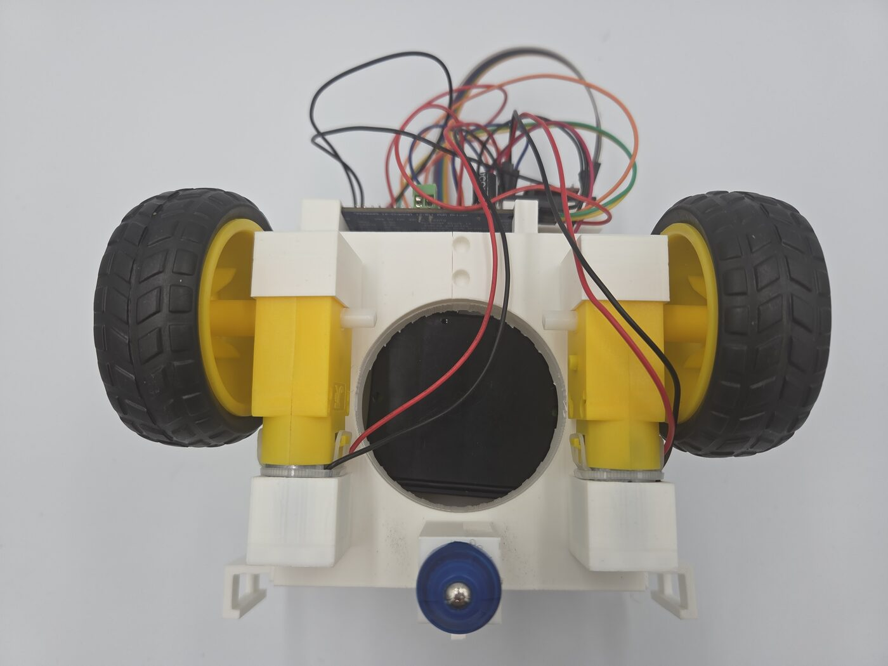
Wiring#
Wire everything according to the table below.
※ In the table below, "Connection 1" and "Connection 2" indicate that the two are directly connected electrically.
| Connection 1 | Connection 2 | Notes |
|---|---|---|
| + terminal of the dry-cell battery box | Right + rail of the breadboard | From here on, the right rail is treated as the 6V supply — take note |
| - terminal of the dry-cell battery box | - rail of the breadboard | - |
| ESP32 5V pin | Left + rail of the breadboard | From here on, the left rail is treated as the 5V supply — take note |
| ESP32 GND | - rail of the breadboard | - |
Pin set as dc/pins/pwma in config.json |
TB6612FNG PWMA pin | - |
Pin set as dc/pins/ain2 in config.json |
TB6612FNG AIN2 pin | - |
Pin set as dc/pins/ain1 in config.json |
TB6612FNG AIN1 pin | - |
Pin set as dc/pins/stby in config.json |
TB6612FNG STBY pin | - |
Pin set as dc/pins/bin1 in config.json |
TB6612FNG BIN1 pin | - |
Pin set as dc/pins/bin2 in config.json |
TB6612FNG BIN2 pin | - |
Pin set as dc/pins/pwmb in config.json |
TB6612FNG PWMB pin | - |
| TB6612FNG VM pin | Right + rail of the breadboard | - |
| TB6612FNG VCC pin | Left + rail of the breadboard | - |
| TB6612FNG GND pin | - rail of the breadboard | TB6612FNG has three GND pins — connect all of them to the breadboard's - rail |
The wiring diagram for the ESP32-DevKitC case is shown below (the breadboard alone doesn't have enough holes, so the TB6612FNG is wired on a mini breadboard).
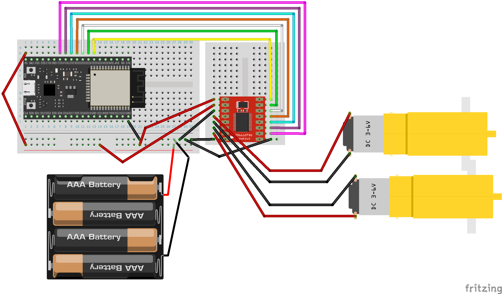
TB6612FNG wiring tip 1
The TB6612FNG has each pin's role printed on the back — check it carefully before wiring.
※ Of course, once plugged into the breadboard the pin positions are mirrored left-right compared to viewing the back side — keep that in mind.
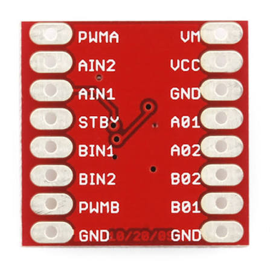
Reference image: TB6612FNG dual motor driver (max 1.2A continuous) (Switch Science)
TB6612FNG wiring tip
For the TB6612FNG's PWMA–PWMB pins, if you set the corresponding ESP32-side pins to be consecutive, you can
- handle all 7 jumper wires as a single bundle instead of stripping/routing them one by one
which keeps the wiring much tidier.

Finished Result#
The finished robot from this guide looks like this:
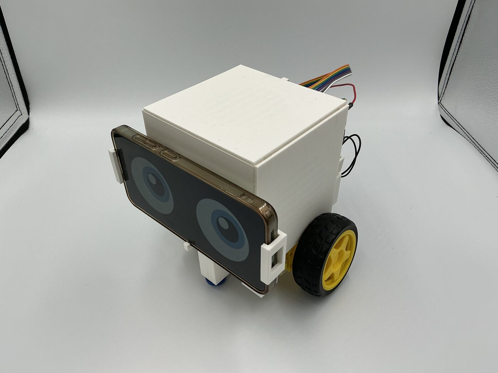
Operation#
Startup Procedure#
Follow the steps in this startup procedure.
Enabling the DC Motor#
In the smabo-web "Config" tab,
- enable "Modes/dc_drive"
.
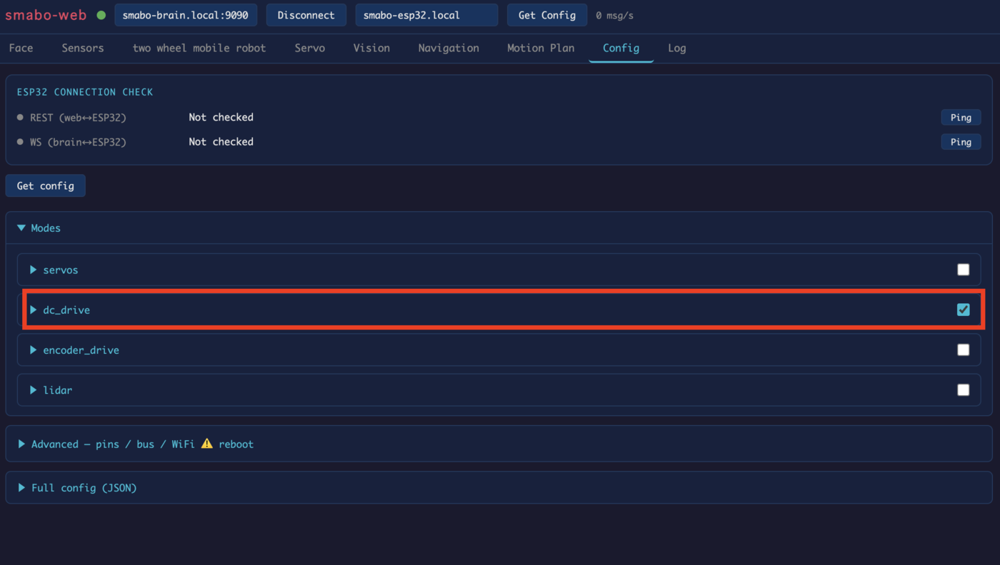
Controller Control#
This section explains controller-based control.
You can control smabo's mobile robot using the controller on the "two wheel mobile robot" tab.
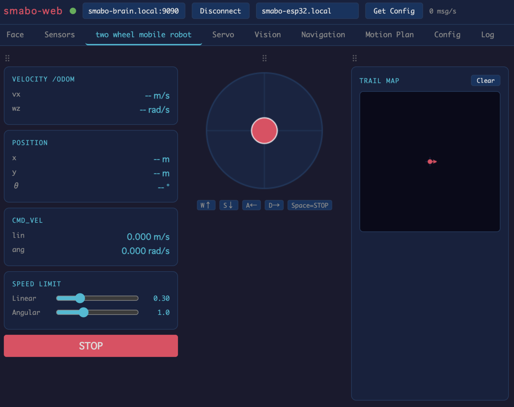
Image-Processing Control#
This section explains image-processing based control.
In the "Vision" tab's "Detection" section,
- enable "Enabled", and
- set any recognition mode (here, "color" mode is configured to recognize a blue object)
.
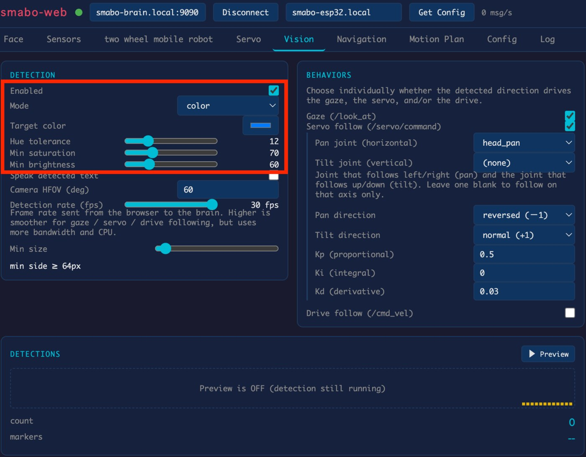
Next, under "Behaviors",
- enable "Drive follow".
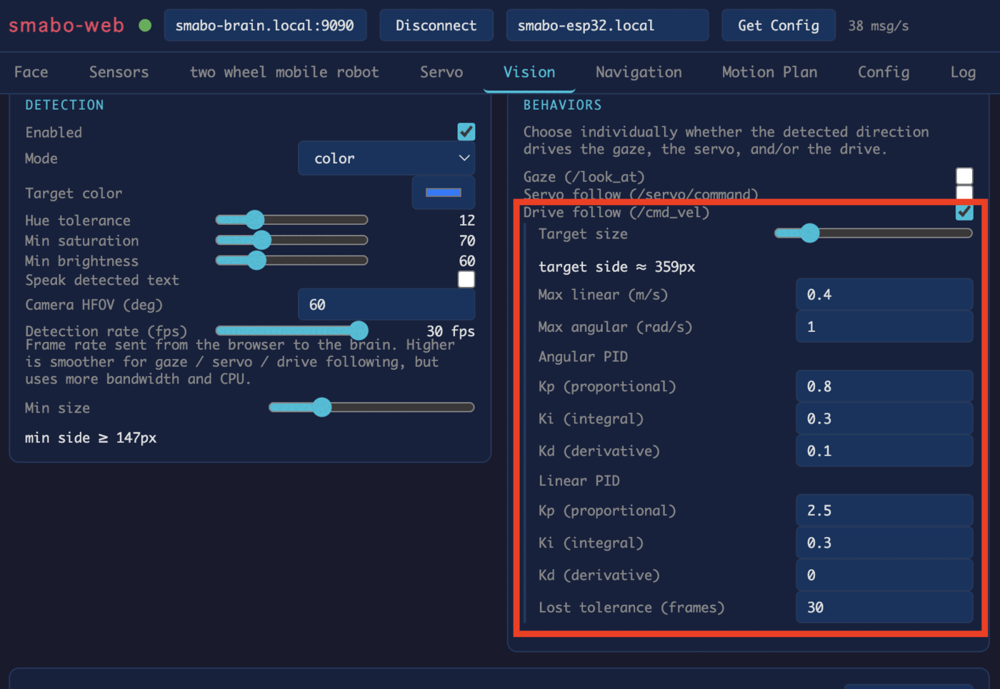
In Drive follow mode, the mobile robot moves forward/backward so that the recognized object's apparent size (as seen by the camera) matches the "Target size" (you can check the exact size via the blue box in the preview screen).
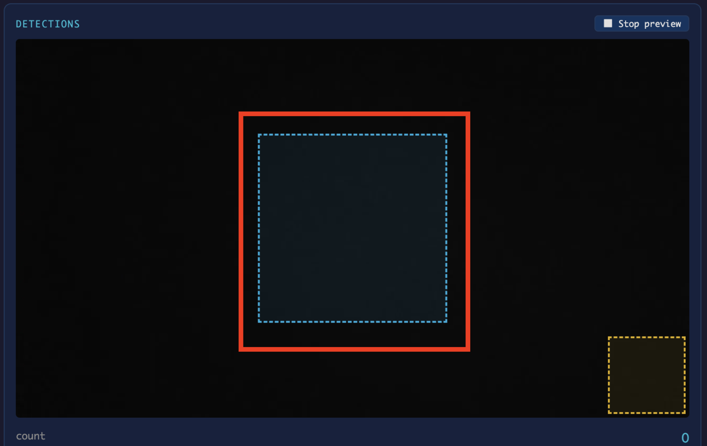
Once configured, bring the recognition target in front of the smartphone camera and smabo's mobile robot will move to follow it.
Next#
Next, we'll cover the following node on the roadmap: